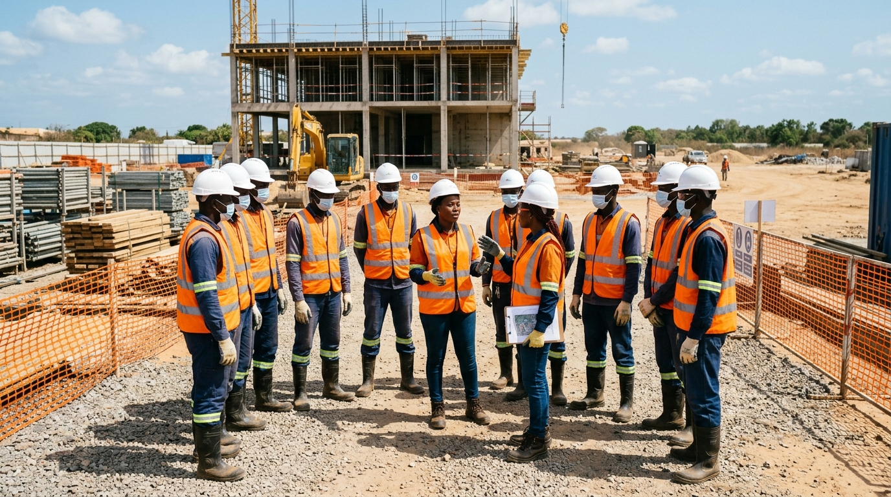

À Propos de Cymalaubat SUARL
Cyprien Manda Laurent Bâtiment — Bâtir avec passion, construire avec excellence depuis 2004.
20 Ans d'Excellence au Cœur du Sénégal
Fondée en 2004 par Jean Cyprien Mendy, Cymalaubat SUARL — dont le nom complet est Cyprien Manda Laurent Bâtiment — est née d'une vision simple mais ambitieuse : offrir au Sénégal des prestations de BTP et de Génie Civil au niveau des standards internationaux, avec une profonde connaissance du contexte local.
Basée au 27 Wakhinane, à Guédiawaye dans la région de Dakar, notre entreprise a progressivement élargi son champ d'expertise pour couvrir l'ensemble des métiers du BTP : gros œuvre, génie civil, VRD, rénovation et bureau d'études.
Aujourd'hui, avec plus de 250 projets réalisés et une équipe de professionnels qualifiés, Cymalaubat SUARL est reconnue comme l'un des acteurs fiables du secteur de la construction au Sénégal.
Fondation de Cymalaubat SUARL
Jean Cyprien Mendy crée l'entreprise à Guédiawaye, Dakar, avec une équipe de 5 personnes et la volonté de bâtir différemment.
Premiers Grands Chantiers
Réalisation des premiers projets d'envergure en gros œuvre résidentiel dans la région de Dakar. Croissance de l'équipe à 25 collaborateurs.
Extension au Génie Civil
Développement des compétences en génie civil et ouvrages d'art. Obtention de marchés publics stratégiques en VRD.
Création du Bureau d'Études
Ouverture du département AMO et bureau d'études techniques, permettant une offre clé-en-main de la conception à la livraison.
20 Ans — Bilan & Perspectives
Célébration des 20 ans avec 250+ projets réalisés. Engagement vers des constructions éco-responsables et la formation des jeunes talents sénégalais.
Vision, Mission & Valeurs
Notre Vision
Devenir la référence du BTP en Afrique de l'Ouest en offrant des ouvrages de classe mondiale, en intégrant les technologies innovantes de construction et en contribuant activement au développement durable du Sénégal.
Notre Mission
Réaliser des projets de construction et de génie civil qui dépassent les attentes de nos clients, en respectant les délais, les budgets et les normes de qualité les plus élevées, tout en veillant à la sécurité de tous sur nos chantiers.
Nos Valeurs
Intégrité — Honnêteté et transparence dans toutes nos relations.
Excellence — Qualité sans compromis à chaque étape.
Innovation — Adoption des meilleures pratiques et technologies.
Solidarité — Engagement envers nos équipes et notre communauté.
Qualité, Hygiène, Sécurité & Environnement
Chez Cymalaubat SUARL, la charte QHSE n'est pas un simple document — c'est notre façon de travailler au quotidien. Chaque chantier est géré selon des protocoles stricts de qualité, d'hygiène, de sécurité et de respect de l'environnement.
Notre équipe QHSE veille à l'application rigoureuse de ces standards sur l'ensemble de nos sites, formant régulièrement nos collaborateurs aux meilleures pratiques de sécurité sur les chantiers.

Qualité
Contrôle rigoureux de tous les matériaux et procédés. Respect des normes BCSN et standards internationaux ISO.
Hygiène
Chantiers propres et organisés. Gestion responsable des déchets et des matières dangereuses selon la réglementation.
Sécurité
Port obligatoire des EPI (casques, gilets, harnais). Formations sécurité régulières et zéro tolérance pour les infractions.
Environnement
Minimisation de l'impact environnemental. Utilisation de matériaux éco-responsables et gestion optimisée des ressources naturelles.
Les Hommes & Femmes de Cymalaubat
Notre force réside dans notre équipe pluridisciplinaire de professionnels passionnés par le BTP.
Ingénieur en BTP avec plus de 20 ans d'expérience dans la construction et le génie civil au Sénégal. Visionnaire et entrepreneur engagé.
Expert en ouvrages d'art et structures complexes. Coordination technique des grands chantiers et supervision des équipes terrain.
Conception, plans d'exécution et suivi de la maîtrise d'ouvrage. Coordination entre clients, architectes et équipes de réalisation.
Veille à l'application des normes QHSE sur tous les chantiers. Formations sécurité, audits et certification des processus qualité.
Agréments & Certifications
Travaillons Ensemble
Vous avez un projet de construction ou de rénovation ? Contactez notre équipe pour un devis gratuit et sans engagement.